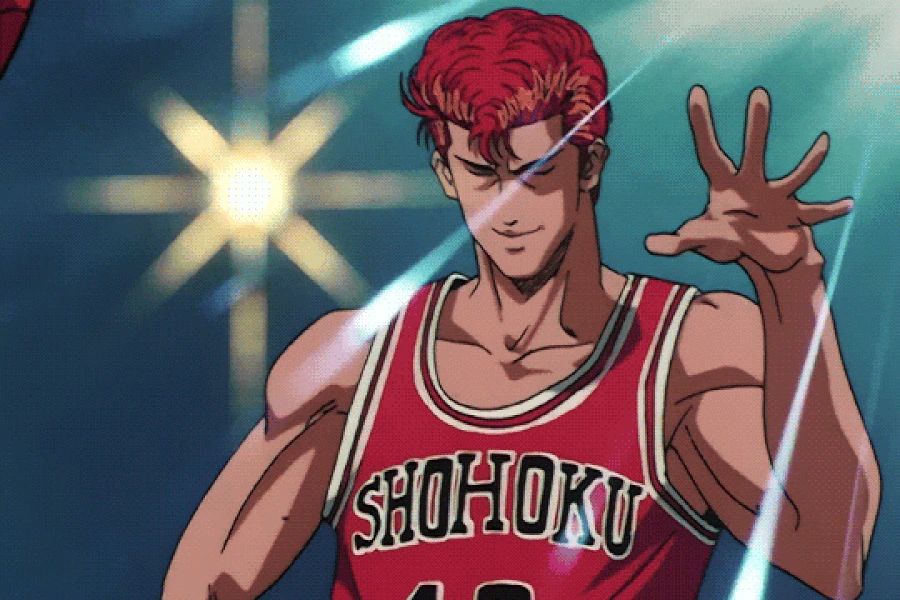

Hanamichi Sakuragi (桜木花道 Sakuragi Hanamichi?)
Año: 1º año de preparatoria
Edad: 15 años
Estatura: 189.2 cm
Peso: 83 kg
Camiseta número: #10
Posición: Ala-Pívot
Cumpleaños: 31 de mayo
Zapatillas: 1º Nike air Jordan VI Olimpic
Un estudiante quinceañero problemático y agresivo que durante la secundaria baja impuso un triste récord de 50 rechazos amorosos. El último de ellos fue por una chica llamada Yoko, la cual estaba enamorada de Oda, quien era un miembro del equipo de baloncesto de la secundaria Wacon. Este hecho hizo que Sakuragi odiara a muerte todo lo que tenga que ver con el basketball. En sus primeros días como baloncestista, Sakuragi solo causa problemas y peleas con los miembros del equipo, sobre todo con Kaede Rukawa, un habilidoso y asocial jugador, que, además, es el gran amor de Haruko. A lo largo de la serie Sakuragi va conociendo nuevos jugadores tanto aliados como rivales como Ryota Miyagi, Hisashi Mitsui, Akira Sendoh, Kenji Fujima, Shinichi Maki, etc... Con quienes se enfrenta, tanto en peleas como en la cancha, aprendiendo valiosas experiencias. Poco a poco, asistimos a la evolución de Hanamichi Sakuragi desde un simple pandillero problemático hasta convertirse en un auténtico pilar de Shōhoku, sobre todo a su personalidad confiada y arrogante.